포클랜드 전쟁 잡담 - 두 종류의 해리어
게시: 2022-01-27T06:30:03+09:00
<일란성? 아니 이란성> 수직이착륙기인 해리어는 흔히 '거 경항모에서 사용하려고 만든거 아님?'이라고 생각하기 쉽지만 실은 1960년대 냉전 시대에 소련군의 기갑부대에 대비하여 만들어진 것. 머릿수에서 딸리는 NATO군은 소련군의 전무후무 세계최강 기갑군단을 항공전력으로 막을 셈이었는데 NATO 수뇌부가 아무리 생각해봐도 소련군의 탄도탄 소나기에서 공군기지를 보호할 방법이 당최 없었던 것. 그래서 짜낸 묘안이 동유럽 인근 작은 전방 기지에 수직이착륙기를 여기저기 분산해두자는 것. 여러가지 실험기체가 만들어졌으나 그 중 유일한 성공작이 Hawker Siddeley Harrier. 즉, 해리어는 어디까지나 지상군을 공격하기 위한 경공격기. 그러다보니 초기 기체인 영국공군 Harrier GR.1은 물론, 포클랜드 전쟁 당시 버전인 Harrier GR.3에도 아예 공대공 무장이 없었고 레이더도 없었음. 애초에 GR은 Ground Attack & Reconnaissance라는 뜻. GR.3 같은 경우 재래식 폭탄 투하를 보조하고자 레이더 대신 레이저 거리측정기(laser range & marked target seeker)를 기수에 장착. 그러나 해군 버전인 Sea Harrier는 이야기가 완전 반대. 쪼그라드는 살림살이에 항공모함의 '항'짜 이야기도 제대로 못 꺼내던 로열네이비는 공군에서 해리어라는 수직이착륙기를 만들었다는 이야기를 듣고 '옳다커니'를 외치고 이를 위한 경항모를 만들 음모를 꾸밈. 하원에서 예산 짤릴까봐 아예 항모라는 이야기를 빼고 '평갑판 순양함'(through deck cruiser)라는 족보에도 없는 용어를 써가며 만들어낸 것이 2만2천톤짜리 Invincible급 항모 HMS Invincible. 이는 처음부터 오로지 해리어를 위해 설계된 jump-jet 경항모. 그런데 로열네이비는 왜 그렇게 항모를 갖고 싶어했을까? 현대 해전에서 제공권의 중요성을 뼈저리게 알고 있던 로열네이비가 해리어에게 바랬던 것은 (함재기이든 지상발진이든) 무시무시한 적 전투기로부터 아군 함대를 보호하는 것. 제공 전투기로 쓰기에는 해리어는 너무 작고 느렸지만 굶어죽어가던 로열네이비 입장에서는 찬밥 더운밥 가릴 처지가 아니었음. 그러다보니 해군용 버전인 Sea Harrier FRS에서는 무엇보다 공대공 무장이 중요. Sea Harrier FRS와 공군 버전인 Harrier GR.3의 가장 큰 차이는 기수에 레이더를 장착하느라 코가 좀 커진 것과 쉬운 항모 갑판 착륙을 위해 시야 확보가 좋도록 조종석이 좀더 튀어나온 것, 그리고 사이드와인더 공대공 미사일 2발을 장착한다는 점. 물론 FRS라는 접미사 (Fighter, Reconnaissance, Strike)가 암시하듯 폭탄 투하도 가능했음. 그런데 포클랜드 전쟁 때 Sea Harrier의 문제는 그렇게 붙인 레이더에서 비롯... ** 사진1은 공군용 Harrier GR.3 ** 사진2는 해군용 Sea Harrier FRS
** 두 기종의 차이가 보이는지?
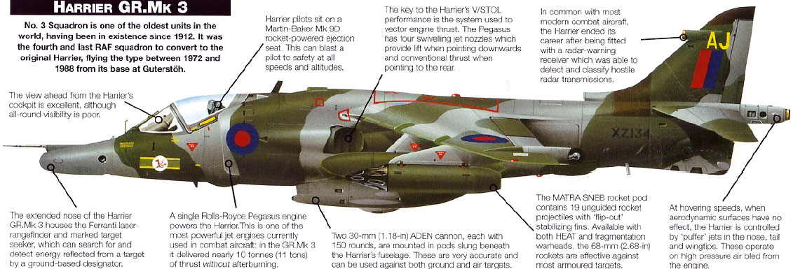 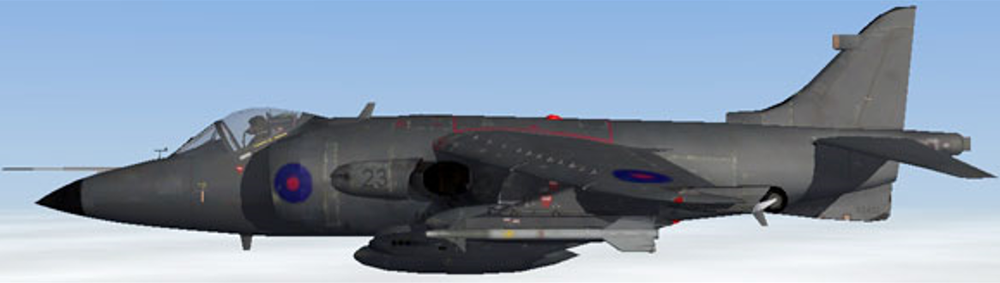
<싼게 비지떡> 해군용 버전인 Sea Harrier FRS는 포클랜드 전쟁 발발 바로 직전인 1981년에야 HMS Invincible에서 전투 배치 완료가 될 정도로 당시로서는 최신예기. 문제는 1980년이었던 HMS Invincible의 취역 일정과 빈약해진 해군 예산에 맞추느라 씨해리어에 장착할 radar인 Ferranti Blue Fox는 빠듯한 시간과 예산에 맟춰 졸속으로 개발된 물건이었다는 것. 지금도 제공기로 사용되는 F-15 Eagle의 경우 필요한 사양의 레이더부터 만들고 그 크기에 맞춰 F-15를 개발했다는데, 씨해리어는 반대였음. 씨해리어 콧대 속에 들어갈 작고 저렴한 레이더를 만들라는 주문을 받은 Ferranti사는 기존에 만들었던 Seaspray radar를 기반으로 Blue Fox 레이더를 만들었는데, 원래 Seaspray는 헬리콥터가 해상에서 수상함을 탐색하기 위해 설계된 것. 절대 공대공 용도가 아니었음. 그 결과로 만들어진 블루 폭스도 수상함이나 폭격기 같은 대형 물체만 탐지 가능했음. 그나마 파도가 잔잔할 때는 쓸만 했으나 파도가 거칠어지거나 근처에 섬 같은 장애물이 있으면 그로 인한 noise가 심해서 탐지 능력이 크게 떨어졌음. 포클랜드 탈환을 위해 전개된 씨해리어 비행단은 Naval Air Squadron 800 (HMS Hermes)과 801 (HMS Invincible)이었는데, 블루 폭스 레이더가 뒤늦게 개발된 관계로 이 두 비행단은 최근에야 이 레이더를 장착하여 훈련을 할 수 있었음. 특히 허미즈의 NAS 800은 이 레이더를 써보고는 '도저히 쓸 수가 없는 물건'이라는 결론을 내리고 실제 전투에서는 아예 무시하기로 작정. 그래서 같은 영국 해군 비행단이면서도 NAS 801은 블루 폭스를 적극 활용하는 전술을 사용했고, NAS 800은 자신의 레이더는 무시한 채 인근 군함의 레이더 지휘를 무전으로 전해 듣고 육안으로 확인하는 전술을 채택. 가뜩이나 조기경보기가 없어서 위태위태했던 함대 방어는 이 두 비행단 간의 손발이 안 맞는 전술 때문에 더욱 혼란스러웠고, 결국 아르헨티나 공군의 공격에 방어망이 숭숭 뚫리는 결과를 낳음. 실제로 블루 폭스는 파도가 거친 포클랜드 인근의 겨울 바다 위를 낮게 날아오는 아르헨티나 공군기들을 거의 잡아내지 못했음. 다만 바다가 잔잔할 때는 제 성능을 발휘하여, 아르헨티나 항공모함 베인티싱코 데 마요가 5월 2일 영국 함대를 공격하려고 접근할 때 190km 밖에서 그 위치를 잡아냈다고. 결국 블루 폭스는 도입된지 10년 만에 개선된 레이더 Blue Vixen으로 모두 교체. ** 사진1은 작은 Blue Fox 레이더를 장착한 Sea Harrier FRS ** 사진은 포클랜드 전쟁 이후 좀 더 큰 Blue Vixen 레이더를 장착하느라 콧대에 성형 수술 티가 나는 Sea Harrier FA.2
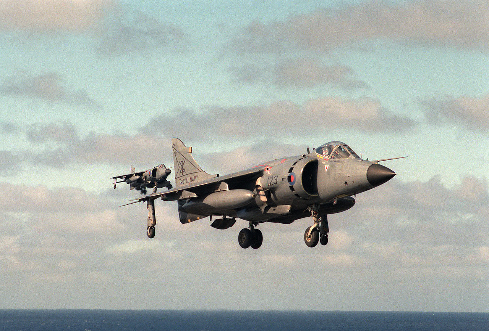 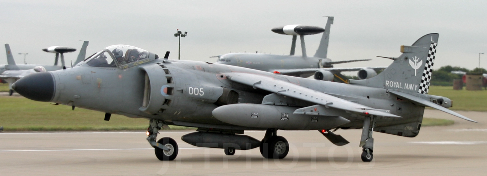
<머쓱한 형제들> 로열네이비의 Sea Harrier FRS는 숫자가 부족하다보니, HMS Hermes와 HMS Invincible에 실려 포클랜드 전쟁에 투입된 것은 공군의 Harrier GR.3도 있었음. 비교적 안락한 서독 공군기지에서 잘 있다가 졸지에 좁고 거친 로열 네이비 경항모에 배치된 공군 GR.3들은 여러가지 어려움을 겪었는데, 그 중 하나가 공대공 임무. 기본적으로 해군용 FRS와 공군용 GR.3는 겉보기에는 둘다 같은 해리어 전투기지만 FRS는 공대공 임무, GR.3는 지상공격 임무 위주로 설계된 것이다보니, GR.3에는 사이드와인더조차 장착이 안되었음. 그런데 FRS가 다 격추되고나면 GR.3가 함대 방어 임무에 투입되어야 할 판국인지라 출정하기 전에 GR.3에도 사이드와인더 미사일 장착을 위해 급히 일부 개조. 기타 부식 방지 등을 위해 GR.3에는 이런저런 응급 개조가 많이 이루어졌음. 물론 그래도 FRS는 함대 영공 방어에 주로 투입되었고, 포클랜드 섬의 아르헨티나 지상군 공격에는 GR.3가 주로 투입됨. 영국함대의 처음 예상으로는, 우월한 성능을 가진 아르헨티나의 Mirage나 Dagger 등에게 씨해리어 FRS가 쳐발릴 줄 알았는데 이런저런 이유로 뜻밖에 잘 싸워준 덕분에 제공권이 어느 정도 확보되자 해리어들은 자신감이 붙음. 그래서 GR.3는 물론이고 폭탄 투하에는 별 재주가 없던 FRS까지 지상군 공습에 투입. 가령 5월 24일 벌어진 Port Stanley에 대한 공습에서 영국해공군 연합편대가 사용한 전술은 FRS와 GR.3의 장단점을 최대한 상호보완하자는 것. FRS 1대와 GR.3 2대가 하나의 편대를 이루어 공습을 하되, 아무래도 폭탄 조준 장치 등에 있어 좀더 역량을 갖춘 GR.3가 목표물 폭격을 맡고, FRS는 공항을 지키는 아르헨티나 대공포에게 겁을 주어 제압하기 위해 조준이 좀 부정확하더라도 GR.3 앞에서 먼저 날아들어가 폭탄을 일단 던지고 보는 역할을 하기로. 결과는 어땠을까? FRS고 GR.3고 영국군이 던진 폭탄은 다 안 맞음. 그냥 여기저기 쓸데없는 구멍이나 만들고 불쌍한 아르헨티나군의 숙소만 부쉈을 뿐 목표물은 대부분 멀쩡. 이유는 아무래도 대공포가 위협적이었으므로 비교적 고공인 5~6km 상공에서 폭탄을 투하했기 때문. 덕분에 해군과 공군은 서로 싸우거나 흉보지 않고 전우애를 돈독히 할 수 있었다고.
** 사진1은 폭격을 받는 와중에도 카메라 셔트를 누른 용감한 아르헨티나 병사가 남긴 사진.
** 사진2는 무유도 로켓탄 및 재래식 폭탄 공격을 퍼붓는 해리어들. 해리어들의 폭격이 항상 무용지물이었던 것은 아님.
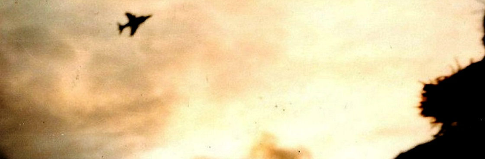 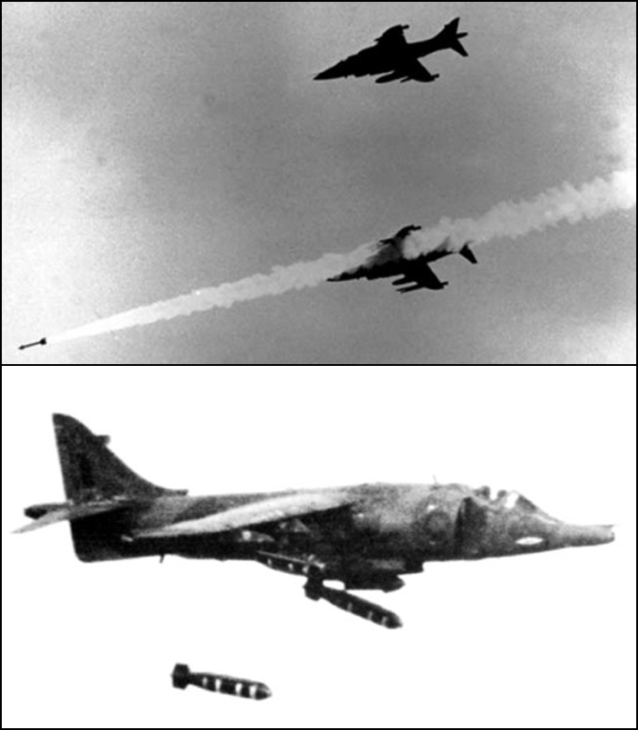
<가난한 영국군에게는 레이저 유도 폭탄이 없었나?> 그런데 왜 당시 영국군은 잘 맞지도 않는 재래식 폭탄만 썼을까? 레이저 유도 폭탄은 이미 월남전 때도 사용되었던 것인데? 물론 가난해서 그랬음. 그러나 가난한 영국에게는 부자 사촌동생 미국이 있었음. 위에 언급한 5월 24일의 최선을 다한 영국 해공군 합동 폭격 작전이 헛수고로 귀결되던 날, 아센시온에서 공중급유 받으며 날아온 영국 공군 C-130 허큘리스 수송기가 귀중한 화물을 낙하산으로 영국 함대에 떨궈줌. 아센시온 기지의 미군이 제공한 Paveway II 레이저 유도 폭탄 키트. 그런데 레이저 유도 폭탄을 쓰려면 해리어에 레이저 조준 장치가 있어야 하지 않던가? 아! 공군용 Harrier GR.3의 기수에는 LRMTS (laser range & marked target seeker)라는 레이저 장치가 있었지! 근데 이건 재래식 폭탄 투하할 때 지상군이 표시해준 레이저 표적을 탐지하거나 또는 그냥 거리 측정 같은 것만 할 수 있는 것이라서, Paveway II의 유도를 할 수 있는 장치가 아님. 그런데 어떻게 쓰라고? 해리어는 그냥 영국군 지상부대의 지시에 따라 폭탄을 투하만 하고, 지상군이 보유한 레이저 유도장치로 타겟을 조준하는 방식을 썼음. 그런데 그렇게 레이저 포인터 사용하는 것도 꼭 쉬운 일이 아니라서 처음에 투하한 2방은 모두 빗나갔다고... 나중에는 명중탄을 여러번 기록함.
** 사진1. Paveway II 레이저 유도 폭탄. 재래식 폭탄의 머리와 꼬리에 유도키트를 붙이면 스마트 폭탄이 됨.
** 사진2. 좌측줄의 앞쪽 3대는 공군용 Harrier GR.3, 나머지는 해군용 Sea Harrier FRS인데, 맨 앞쪽 Harrier GR.3의 날개 밑에 Paveway II 폭탄이 장착되어 있는 것이 보임.
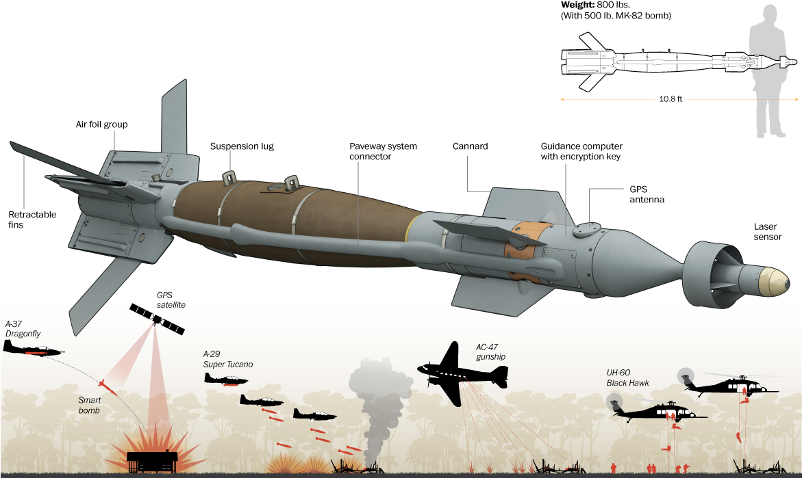 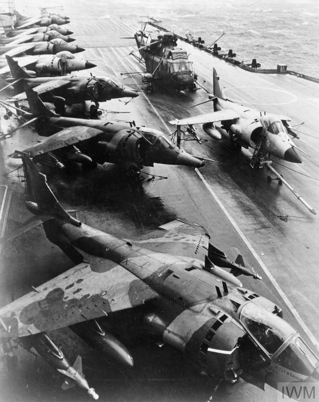
<전설의 해리어 기동> 사진은 유명 애니메이션 Area-88에 묘사되는 Harrier의 vector nozzle을 이용한 VIFF (Vectoring in Forward Flight) 기동. 저렇게 비행 중에 제트 노즐을 틀어서 뒤에서 쫓아오는 적기를 회피하는 기동이 정말 가능한 일이고 실전에 쓸 수 있는 기술인가? 결론은 yes. Harrier에는 영국 공군 뿐만 아니라 V/STOL 기에 관심이 많던 미해병대도 투자했는데, 초기의 평가 비행에는 미해병대도 적극 참여. 이 VIFF 기동은 영국군이 아니라 미해병대 조종사들이 상대적으로 느린 해리어를 어떻게든 잘 써보려고 이리저리 굴려보다가 개발한 기술. 영국공군은 해리어를 지상공격기로 사용하려 했으므로 공대공 전투에 별 관심이 없었으나 미해병대는 이야기가 좀 달랐으므로 공중전에 꽤 중점을 두었음. 그러면 포클랜드 전쟁 때 영국 해군의 씨해리어들은 이 기술을 써서 아르헨티나 공군기들을 상대했을까? 아쉽게도 no. 영국 해군 조종사들은 그런 기술 연습도 별로 하지 않았다고.
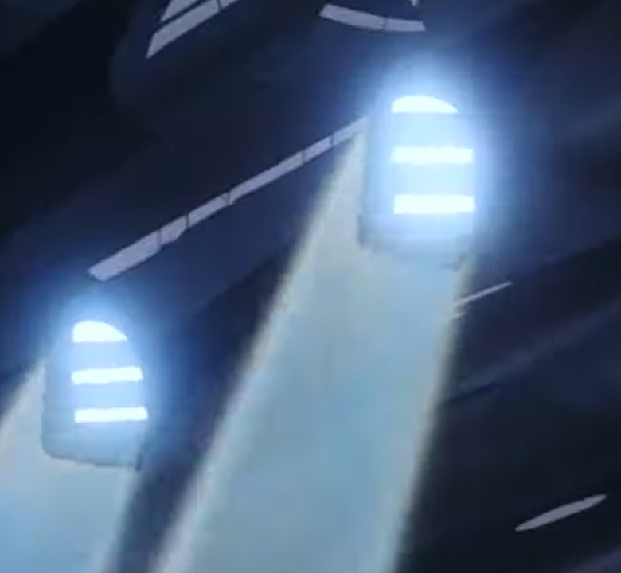
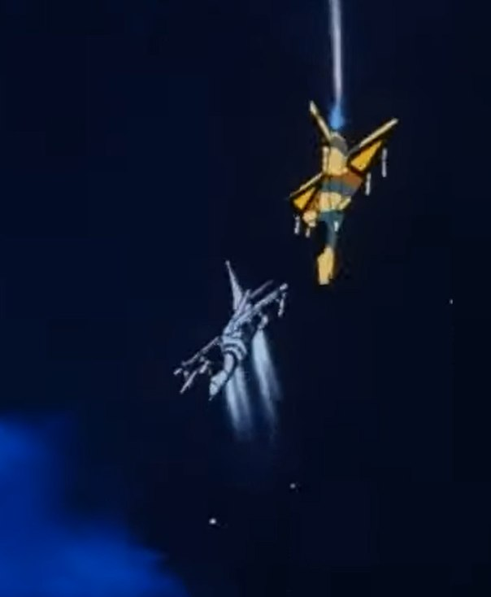
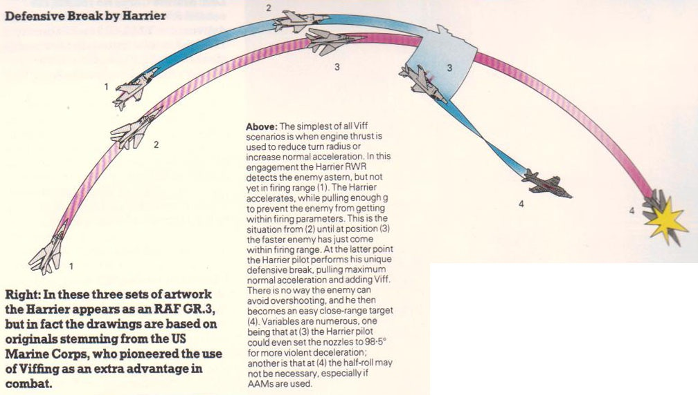
<바보야 문제는 페인팅이야>
남자애라면 어릴 때 대부분 전투기 프라모델 한두개 정도는 조립해봤을텐데, 세계적으로 플라스틱모델을 숭고한 취미로 삼는 덕후들이 많음. 그런데 덕후들에게는 조립은 그냥 도화지를 사는 행위일 뿐, 진짜는 바로 페인팅. 얼마나 실감나게 엔진 검댕과 비바람 자국 등을 잘 표현해내는가 하는 것이 핵심.
그런데 실제 전투기에서도 페인팅은 나름 중요. 포클랜드 전쟁 이전에는 Sea Harrier FRS는 WW2 때처럼 위는 Dark Sea Blue로, 아래는 Satin White로 칠하는 것이 보통 (사진2). 이렇게 2-color로 가는 이유는 위에서 내려다볼 때는 검푸른 바다색과 어울려 잘 안보이고, 아래에서 올려다볼 때는 눈부신 태양 속에서 잘 안보이도록 하자는 것.
그러나 포클랜드 전쟁에 실제 투입될 때는 '고등어도 아니고 이건 에바지'라며 배때지에도 Dark Sea Blue를 칠해서 1-color로 갔음. 그러나 실제 전투때 보니 바다를 배경으로 보건 하늘을 배경으로 보건 역시 너무 눈에 띈다는 지적이 많아서 전후에는 훨씬 더 밝은 회색으로 칠했다고 (사진3).
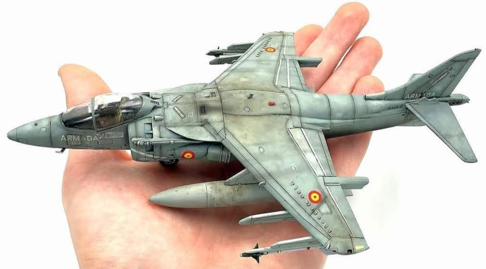 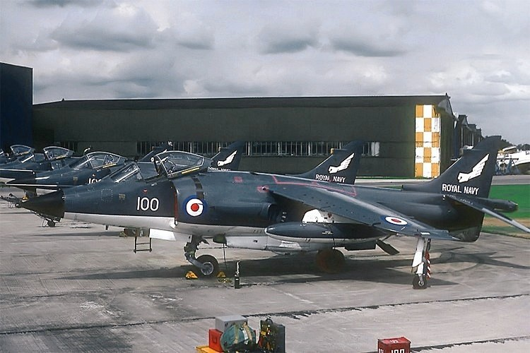 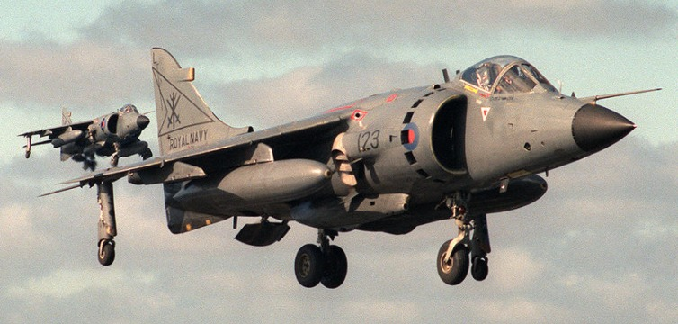